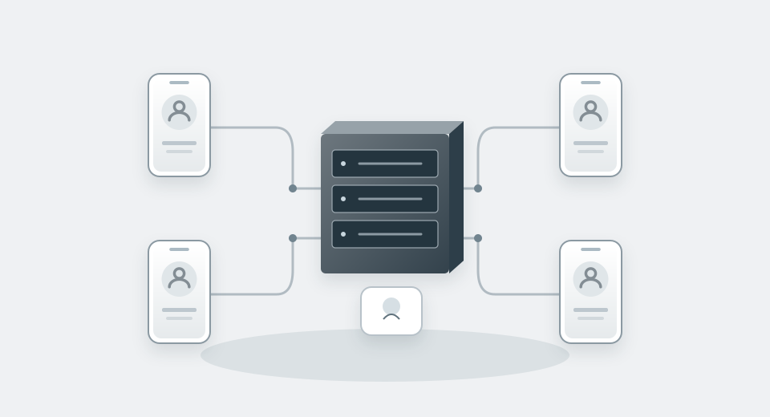

Zentrale Plattformen
Centralised platforms
Platforme centralizate

- Zentrale InfrastrukturCentral infrastructureInfrastructură centrală
Gemeinsamer Angriffspunkt.
A shared point of attack.
Un punct comun de atac.
- Konten und NutzerkennungenAccounts and user identifiersConturi și identificatori
Ansatzpunkte zur Identifizierung.
Starting points for identification.
Puncte de plecare pentru identificare.
- Vorgegebene ArchitekturProvider-defined architectureArhitectură prestabilită
Der Anbieter bestimmt die Regeln.
The provider sets the rules.
Furnizorul stabilește regulile.